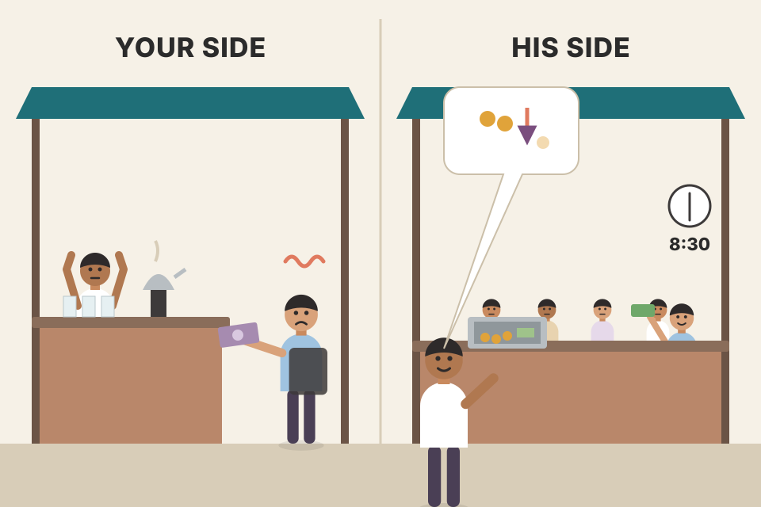
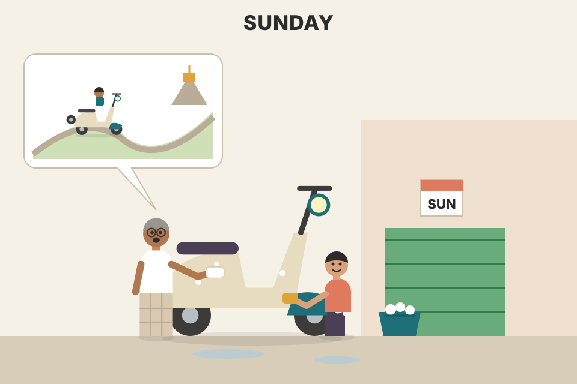
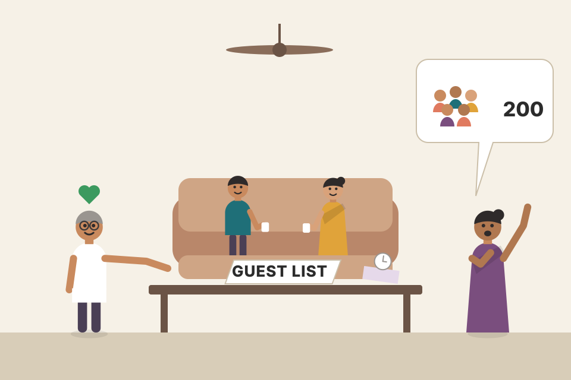
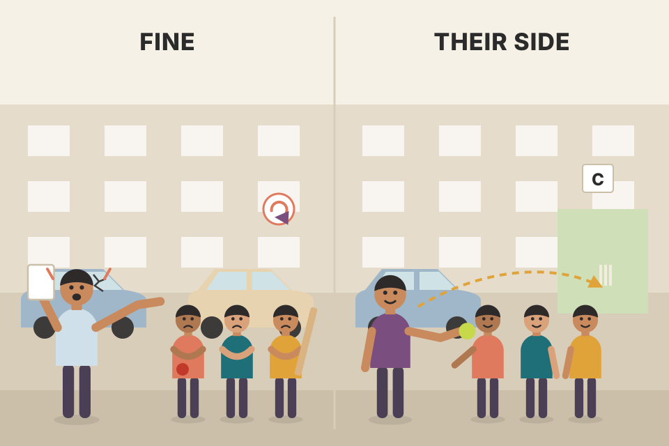
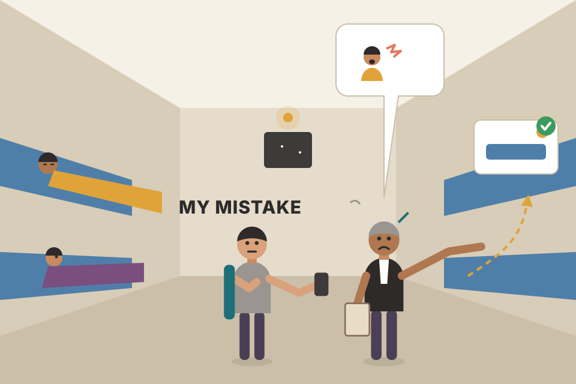
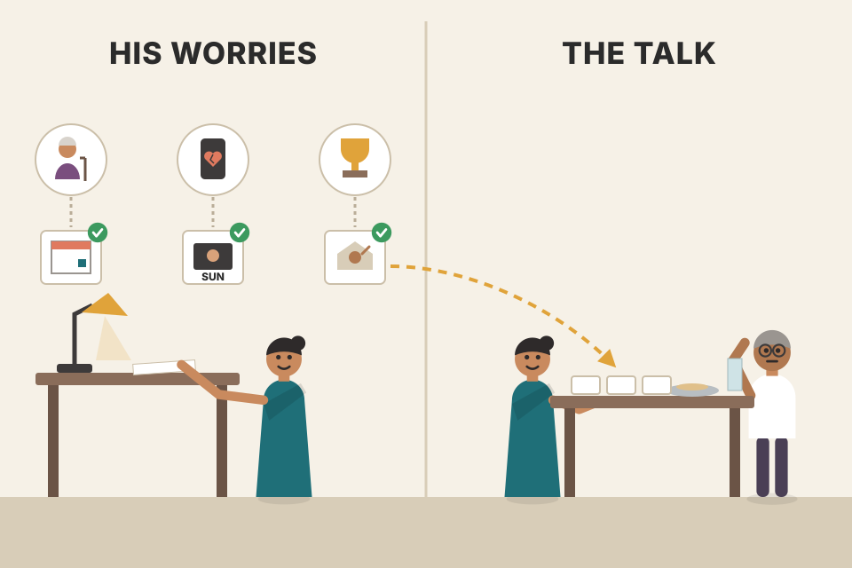

DALE CARNEGIE · HOW TO WIN FRIENDS · PART THREE · CHAPTER 8 · PDF p171–176
A Formula That Will Work Wonders for You
Before you judge, ask, or persuade, stand where the other person stands. Their behaviour has a reason; find it, and you have the key to them.
This is one of the shortest chapters in the book, and Carnegie treats it as one of the most important. The "formula" is simple: the other person may be completely wrong, but they do not think so, so condemning them gets you nowhere. Instead, work out why they think and act the way they do, and honestly ask how you would feel in their position. Carnegie shows it working in three very different places: a husband who stopped mocking his wife's gardening, Carnegie himself putting out boys' campfires in a park, and a woman behind on her car payments who turned a hostile debt collector into an ally. He ends by saying that if you take only one habit from the whole book, let it be this one.
Principle 8 of Part Three
Try honestly to see things from the other person's point of view.
How the chapter fits together
pdf p171–176 · read this first
Where it sits. This is chapter 8 of Part Three, "How to Win People to Your Way of Thinking", the longest Part of the book with twelve principles (Ch.10 to Ch.21). The chapters just before it were about letting the other person do the talking (Ch.15) and letting them feel an idea is theirs (Ch.16). This chapter is the mental move underneath both: you cannot let someone own an idea, or listen well, unless you first see the situation from their side. The next chapter, Ch.18 "Be sympathetic with the other person's ideas and desires", takes the next step: once you see their view, show them that you feel it too.
An echo from Part One. The idea is not new in the book. In Ch.3, Carnegie quoted Henry Ford's line that the one secret of success is to get the other person's point of view, and closed that chapter with almost the same "if you get only one thing from this book" sentence that closes this one (pdf p55, p62). Ch.3 used the idea to motivate people; here it is used to persuade them and to stop disliking them.
The argument as a chain. Each row reacts to the one before it.
Problempeople are often wrong→but they never think they are
Whyevery act has a reason→we care hugely about our affairs, mildly about theirs(Goode)
The formuladon't condemn→find the reason→"how would I feel in their shoes?"
At homeSam Douglas: from mocking the lawn to weeding beside his wife
In talkNirenberg: purpose first · say what you'd want to hear · accept their view
In publicCarnegie's park fires: threats → sullen kids; their view → willing help
Under stressElizabeth Novak: apology + listening → a debt collector offers easy terms
How to applybefore any request: "Why should they want to?"→Dean Donham's two hours on the sidewalk
PrincipleTry honestly to see things from the other person's point of view
About the title: Carnegie calls it a "formula" because it is a repeatable step you can run before any conversation, not a talent: pause, picture their side, ask why they would want what you want.
01 · THE FORMULA
They may be wrong, but they don't think so: find the reason
pdf p171
Carnegie opens without a story. He goes straight to the formula, in a few short steps:
Accept the starting point. The other person may be completely wrong. But in their own eyes they are not. (This is the lesson of Ch.1, where even gangsters saw themselves as the good guys.)
Don't condemn them. Carnegie says anyone can condemn; it takes no skill. Trying to understand is the rare thing, done only by people he calls wise, tolerant and exceptional.
Find the reason. There is always a reason why a person thinks and acts the way they do. Dig it out ("ferret it out", in his words) and you hold the key to their actions, and perhaps to their whole personality.
Honestly put yourself in their place. Ask yourself: how would I feel, and how would I react, if I were in their shoes?
What you get for it. Two payoffs. First, you save yourself time and irritation, because once you are curious about why something happened, you resent what happened much less. Second, your skill with people goes up sharply.
"By becoming interested in the cause, we are less likely to dislike the effect."Quoted by Carnegie (pdf p171)
Kenneth Goode's test. Carnegie then borrows an exercise from Kenneth M. Goode's book How to Turn People Into Gold. Stop for a moment and compare two things: how intensely interested you are in your own affairs, and how mildly you care about almost anything else. Then realise that every other person on earth feels exactly the same way about their affairs. Goode says that once you grasp this, you stand where Lincoln and Theodore Roosevelt stood, on the only solid foundation for dealing with people: success with others depends on a sympathetic grasp of their point of view.
Dated wording. Carnegie writes "the other man" and "his shoes" throughout; read it as "the other person". The idea has nothing to do with gender.
Try it: find the reason
Each card is an everyday annoyance with the story we usually tell ourselves. Tap to see reasons the other person might have. You will not know which is true until you ask, and that is the point.
Open all four, then notice what happened to your irritation.
Picture it

You hand a ₹500 note to the chaiwala outside your office for a ₹15 cutting chai, and he sighs and says he has no change. Your first thought: "Rude. How does he run a shop without change?" Now stand behind his counter. It is 8:30 a.m., his whole morning's takings are ₹300 in coins, and if he gives you ₹485 he cannot serve the next twenty customers. Your note is a small problem for you and a big one for him. The irritation drains away, and you dig out a ₹20 note.
Where it breaks: the chaiwala has a neat, sympathetic reason. Real people sometimes do not; occasionally the reason is just carelessness. The formula does not promise a good reason. It promises that looking for one lowers your irritation and shows you what would actually change their behaviour.
What's happening behind it
The book's explanation: condemning is a reaction to the effect (what they did). Understanding is curiosity about the cause (why they did it). Curiosity crowds out dislike, and the cause is the lever you need anyway. Goode adds the reason we skip this step: our own concerns feel enormous and other people's feel minor, so their reasons rarely cross our minds.
Beyond the book: psychologists call our habit of explaining other people's actions by their character ("he's lazy") but our own by circumstances ("I was swamped") the fundamental attribution error (Lee Ross, 1977). Asking "how would I act in their shoes?" is a direct fix: it forces you to look for the circumstances first. Research on egocentric bias also backs Goode's test: people consistently overestimate how much others notice and care about their concerns.
At work
A senior engineer on another team keeps rejecting your API proposal in review. The easy story is "he's territorial". The formula asks: what does he see that you don't? Maybe his team was paged for a month after the last "small" API change, and he is the one who gets woken up. Ask him about it. Once you know the reason, your proposal can answer it (a feature flag, a rollback plan), and the rejections usually stop.
Interview angle. "Tell me about a time you disagreed with a colleague or stakeholder." A strong answer describes the other side's goals fairly and specifically, in their terms ("she was measured on launch dates; I was measured on uptime"), and shows that understanding their reason is what unlocked the solution. Interviewers listen for whether you can state the other side's view well enough that they would agree with your summary.
Worked example: the 6 p.m. meetings
A product manager keeps putting team syncs at 6 p.m. You are annoyed; it is the time you leave.
Condemn the effect
In the team chat: "Another 6 p.m. meeting. Some of us have lives."
The PM feels attacked in public, defends the timing, and the meetings stay.
Find the cause
Privately: "I see the syncs keep landing at 6. Is that the only slot that works with the US team? If so, could we alternate with an early-morning slot every other week, or move updates to a written thread?"
You learn the reason (the overlap window), and you offer a fix that works for both sides.
Connects to
Why the other person never thinks they are wrong: Ch.1 "Don't criticize, condemn or complain", whose last line is "try to understand them" (this chapter is that idea in full).
Sam Douglas and the lawn that never looked any better
pdf p171–172
The first story is deliberately small. Carnegie wants to show the formula working on something as trivial as weeds.
Hempstead, New York4 years in the houselawn cut twice a weeka former student of Carnegie's course
The habit. Sam Douglas kept telling his wife she wasted far too much time on their lawn: weeding, fertilising, mowing twice a week. His evidence: after four years in the house, the lawn looked no better than the day they moved in. Each time he said it, she was hurt, and the rest of the evening was spoiled.
What he had missed. After taking Carnegie's course he saw how foolish he had been. It had never crossed his mind that she enjoyed the work, and that what she might really like was a compliment on how hard she worked at it. He had been judging the garden by his measure (does it look better?) when hers was different (I like doing this).
The turn. One evening after dinner she said she was going out to pull weeds and asked him to keep her company. He said no at first. Then he thought again, followed her out, and started weeding beside her. She was openly pleased, and they spent an hour working hard and talking pleasantly.
The outcome. After that he often helped in the garden and praised her work: how fine the lawn looked, and what a job she was doing with soil as hard as concrete. The result, in Carnegie's telling, was a happier life for both of them, because he had learned to see things from her point of view, "even if the subject was only weeds".
Dated framing. A husband grading his wife's housework belongs to its time. The pattern is universal, though: a partner's sourdough experiments, a parent's elaborate puja preparations, a flatmate's daily gym routine. Judge it by your yardstick and it looks like waste; ask what it means to them and it looks like joy.
Picture it

Every Sunday your father spends two hours washing and polishing his twenty-year-old Bajaj scooter, which runs no better afterwards. You keep telling him it is pointless; he goes quiet. One Sunday you pick up a cloth and do the mudguards while he does the seat. He tells you about the trip to Tirupati he made on it in 2004. The scooter is still old. The Sunday is very different.
Where it breaks: a scooter is a thing you can share in for an hour. Some of the things people care about cost real money or time that affects you, and seeing their side does not mean you can never raise it. What changes is how you raise it: after you have understood, and appreciated, what it means to them.
What's happening behind it
The book's explanation: Douglas measured the activity by its result; his wife valued the activity itself, and wanted her effort noticed. His remarks attacked something she enjoyed and gave her no appreciation, so each one cost the whole evening. Seeing her side gave him two new moves: join in, and praise honestly.
Beyond the book: marriage researcher John Gottman calls small invitations like "come keep me company while I weed" bids for connection. In his long-term studies, couples who stayed together "turned toward" such bids far more often than couples who split up. Douglas's first "no" was turning away; following her outside was turning toward.
At work
An engineer on your team spends Friday afternoons tidying internal docs and test fixtures. By your sprint dashboard it shows up as zero story points, and it is tempting to say so. From their side it is craft: the part of the week they enjoy, and the reason onboarding got faster. Ask about it, mention the effect you noticed ("the new joiner set up her laptop in a day, thanks to your README"), and maybe pair with them on one cleanup. You will learn what they value, which is exactly what you need to know when you assign work.
Worked example: a teammate's side project
Your measure only
"You've been tweaking the CI dashboard for weeks. Does it actually help anyone?"
They hear: your effort is worthless. They stop telling you what they are working on.
Their measure too
"I've noticed you keep improving the CI dashboard. What got you into it? Show me what changed; I'd like to know how to use it."
They feel noticed, explain what it solves, and you find out whether it is worth making official.
Between the stories, Carnegie cites a short passage from Getting Through to People (the book's footnote on pdf p176 gives Prentice-Hall, 1963, p.31, and names the author as Dr. Gerald S. Nirenberg). It turns "see their point of view" into three concrete conversational moves.
The core claim. People cooperate in a conversation when you show them that you treat their ideas and feelings as being as important as your own. Three things signal that:
Say where the conversation is going, up front. Begin by giving the other person the purpose or direction of the talk, so they are not left guessing (and guarding) while you get to the point.
Say what you would want to hear in their seat. Let your words be chosen by one test: if I were the listener, is this what I would want to hear, and how I would want to hear it?
Accept their viewpoint. Treat their view as legitimate, as something real to them, rather than an error to be cleared away first.
The payoff Nirenberg names: a listener treated this way keeps an open mind to your ideas. You are not giving up your view; you are making it possible for them to hear it.
Picture it

A family meeting about a cousin's wedding budget. The uncle who chairs it opens with "We're here only to settle the guest list tonight; the venue can wait." Everyone relaxes: nobody has to defend their venue choice. He speaks to the bride's side the way he would want his side spoken to. When the bride's mother says "Two hundred is the minimum, or our relatives will be hurt", he says "I understand, that matters a lot in our community" before discussing numbers.
Where it breaks: a family has decades of history, and three neat moves will not undo an old grudge. And "accepting her viewpoint" did not mean the list became two hundred; it meant the number could be discussed without anyone feeling dismissed.
What's happening behind it
From the book: each move tells the listener their side counts. Stating the purpose removes the suspense that makes people defensive; choosing your words by "what would I want to hear" keeps you from wounding; accepting their view means they need not fight for it before they can listen to yours.
Beyond the book: an unexplained meeting ("Can we talk? 4 p.m.") is a well-known source of dread; people fill the blank with the worst case. Saying the purpose first is a cheap way to lower that threat. Separately, the first name in Carnegie's text looks like a slip: Open Library lists the 1963 Getting Through to People under Jesse S. Nirenberg.
At work
Use the three moves to open any conversation that could go badly. A 1:1 about missed commitments: "I want to use today to understand what made the last two sprints hard, and agree on one change. This isn't a performance review." (purpose). Then phrase things as you would want to hear them about your own work. When they explain ("I was pulled into three incidents"), accept it as their real experience before you add yours.
Interview angle. "How do you handle a difficult conversation?" Structure your answer on these moves: I set the purpose up front, I chose words I would be able to hear in their place, I acknowledged their view before offering mine, and here is what changed afterwards.
Worked example: telling a teammate their design needs rework
No purpose, my words, their view dismissed
"Got a minute?" … (ten minutes of questions) … "Honestly, the queue approach is wrong. We need to redo it."
They spend ten minutes guessing where this is going, then hear their work called wrong.
Nirenberg's three moves
"I'd like 15 minutes to talk about the ingestion design, specifically whether it holds up at peak load. I can see why a queue appealed: it decouples the services cleanly. My worry is ordering at 5x traffic. Can we look at that part together?"
Purpose stated, phrased as you'd want to hear it, and their reasoning credited before the concern.
The park fires: from threats of jail to a friendly question about supper
pdf p172–173
The longest story in the chapter is Carnegie's own, and he tells it against himself: for years he did exactly the wrong thing, with the best of intentions.
a park near Carnegie's homefires season after seasonfire department sometimes calledtwo approaches, years apart
Why he cared. Carnegie walked and rode horseback in the park and, as he puts it, nearly worshipped its oak trees, like the ancient Druids. Every season he watched young trees and bushes killed by fires that never needed to happen.
Who lit them. Not careless smokers. Almost all were started by boys who came out to play at camping and cook a hot dog or an egg under the trees. Some fires got so fierce that the fire brigade had to come.
Why nobody stopped it. A sign warned that anyone starting a fire could be fined and jailed, but it stood in a corner of the park hardly anyone visited. A mounted policeman was meant to patrol, but did not take the job seriously. Once Carnegie galloped up to report a fire spreading fast and asked him to call the fire department; the officer calmly replied that it was not his business, because it was outside his precinct.
Step through the story: two ways to put out a fire
The second approach, as a set of moves. Carnegie gives the speech he used in full; we will not reproduce it, but its structure is the lesson. In order, he:
Opened friendly, about them: asked if they were having a good time and what they were cooking for supper.
Shared their interest: said he had loved building fires as a boy, and still did.
Explained the real danger: fires here are dangerous, because the dry leaves catch and the trees die.
Put the blame elsewhere: said he knew they meant no harm, but other, less careful boys see a fire, build their own, leave it burning, and that is what kills the trees. Without care, there would soon be no trees at all.
Mentioned the law, lightly: yes, they could be jailed for this, but he did not want to be bossy or spoil their fun; he liked seeing them enjoy themselves.
Made small, concrete requests, as questions: would they rake the leaves away from the fire now, cover it with plenty of dirt before leaving, and next time build it over the hill in the sandpit, where it could do no harm?
Thanked them and wished them a good time.
First approach
Second approach
Whose view
Only his: he admits he was just venting his own feelings
Theirs too: they want fun, not trouble
Opening
Warning: you could be jailed
A friendly question about their fun and their supper
Request
An order, in a tone of authority
Three specific asks, phrased as questions
If they resisted
Threat of arrest
None needed; he offered an alternative (the sandpit)
Result
Sullen, resentful obedience; fire probably relit
Willing cooperation; faces saved; both felt better
Dated wording. The book says the boys went to the park "to go native"; that phrase is dated and reads as a slur on Indigenous people today. We say "play at camping". The "boys" would today be "kids" or "teenagers".
Picture it

In a Pune housing society, teenagers play cricket in the parking area every evening, and a ball has already cracked one windscreen. The secretary storms down: "Fine of ₹500 per head next time, I'll tell your parents." They stop, glare, and are back the next day. A different resident walks over instead: "Nice cover drive! I played here too when we moved in. Problem is, the cars here belong to people who'll go to the committee and then nobody gets to play. Could you use the tennis ball, and shift to the ground behind C-wing after 7 when it's free?" They shrug, switch balls, and move.
Where it breaks: the resident had a better place to offer (the ground behind C-wing), just as Carnegie had the sandpit. When there is no alternative, sympathy alone may not be enough. And if a fire is already spreading, you put it out first and talk later; the second approach is for when you have a minute.
What's happening behind it
The book's explanation: his early orders came from his own feelings ("so eager to do the right thing, that I did the wrong thing"), so the boys obeyed only under threat, with resentment, and the behaviour returned as soon as he left. The second approach worked because nobody had forced the boys to obey, so they could save face: nobody lost, so nobody needed to get even.
Beyond the book: psychologist Jack Brehm's theory of reactance (1966) describes the "relight the fire" urge: when people feel their freedom is threatened, they want the forbidden thing more and act to reclaim the freedom. Offering a choice that keeps their freedom (the sandpit) removes the threat. Self-determination research (Deci and Ryan) adds that behaviour driven by a reason people accept lasts longer than behaviour driven by pressure.
At work
The engineering version of a park fire: people keep pushing straight to main, skipping the staging environment, or copying secrets into a shared doc. The "first approach" is a policy email with a threat ("violations will be reported"). It gets compliance while you watch. The "second approach" starts from their side (staging is slow, the deploy queue is painful, they are trying to ship), explains the real danger without accusing them, and offers a sandpit: a faster path that is also safe (a fast-track deploy lane, a proper secrets manager). Where people bypass a process, the process usually has a reason to be bypassed.
Interview angle. "Tell me about a time you got people to follow a process they didn't like." A strong answer has Carnegie's arc: the order didn't stick, you looked at why people were skipping it, you fixed the friction or offered a safe alternative, and adoption followed without enforcement.
The same "ask and explain, don't quote the rule" move with hard hats: Ch.1, plate 4.
05 · UNDER PRESSURE
Elizabeth Novak and the debt collector who became an ally
pdf p174
Carnegie's next claim: seeing through the other person's eyes can ease tension even when your own problems feel overwhelming, and even when you are the one in the wrong.
New South Wales, Australiacar payment 6 weeks late$122 due by Mondayoutcome: $20 by month-end
The threat. Elizabeth Novak was six weeks behind on her car loan. On a Friday the man handling her account rang with an unpleasant call: pay $122 by Monday morning or expect further action from the company. She had no way of finding the money over the weekend, and when he rang again first thing on Monday, she expected the worst.
Her move. Instead of getting upset, she looked at the situation from his side. She apologised sincerely for the trouble she was causing him, and said she must be his most troublesome customer, since this was not the first time she had fallen behind.
His reaction. His tone changed at once. He assured her she was nowhere near his truly troublesome customers, and then told her about them: people who were rude to him, lied to him, and dodged his calls altogether.
"I said nothing. I listened."Elizabeth Novak, as quoted by Carnegie (pdf p174)
The outcome. She let him pour out his frustrations. Then, without her asking, he said it did not matter if she could not pay the full amount now: $20 by the end of the month would do, and she could make up the rest whenever it suited her.
Which response? (the Novak test)
Pick a response to see how Carnegie would judge it.
Picture it

You board the wrong coach of an overnight train to Hyderabad, and the TTE (ticket examiner) arrives looking tired and ready for an argument. Most passengers in your spot argue, wave a phone, or pretend to be asleep. You stand up and say, "Sorry, sir, my mistake. You must be dealing with this all night." He sighs, tells you about the man in S4 who shouted at him for ten minutes, and then finds you a free berth two coaches down for the difference in fare.
Where it breaks: the TTE had the power to help you, as the collector had power over the terms. When the person on the other end has no discretion (an automated system, a strict rule), seeing their side will lower the temperature but may not change the outcome. And it only works if the apology is real: you did board the wrong coach.
What's happening behind it
The book's explanation: Novak imagined the call from the collector's chair. To him she was one more problem customer in a hard job, so she said so, apologised and owned her pattern. That made her the opposite of the people who made his day difficult. Then she listened while he let off steam, and he offered better terms on his own.
Beyond the book: two well-studied effects show up. Reciprocity (Robert Cialdini): a concession or kindness from one side makes the other feel a pull to return it, so her apology invited his leniency. And venting to a sympathetic listener lowers arousal and makes people more generous in the moment, which is why the story works with Carnegie's safety-valve chapter. Note too that the collector's own goal was recovery, not punishment; a small payment from a cooperative customer served him well.
At work
You are the one in the wrong: your team missed the date you promised another team, and their lead pings you angrily. The usual moves are to explain (dependencies, sickness, scope) or go quiet. The Novak move: acknowledge their side first ("This puts you in a bad spot with your launch, and it's the second slip from us"), then let them talk. Most leads, once heard, start solving with you ("Can you give us the read-only part by Friday?"), which is often better than the plan you would have proposed.
Interview angle. "Tell me about a time you missed a commitment" or "dealt with an upset customer." Show that you took ownership in the first sentence, understood what the miss cost them, listened before proposing anything, and reached a revised plan together. Avoid leading with the reasons it was not your fault.
Worked example: replying to an angry client after an SLA breach
Defend first
"The outage was caused by our cloud provider and was outside our control. Per the contract, the SLA credit is 5%."
Accurate, and it makes the client feel unheard. They escalate.
Their view first
"I'm sorry. You were in the middle of your sales week, and this is the second incident this quarter, so I understand the frustration. Could we get on a call today? I'd like to hear what it cost your team before we talk about fixes and credits."
You may learn exactly what they need (an early-warning alert), and the credit conversation becomes easy.
Before you ask anyone for anything: Donham's two hours on the sidewalk
pdf p174–176
The habit Carnegie prescribes. Tomorrow, before you ask anyone to do something (his examples: put out a fire, buy your product, give to your favourite charity), pause. Close your eyes if it helps, and think the whole request through from the other person's side. Then ask yourself one question:
"Why should he or she want to do it?"Carnegie (pdf p174)
The honest trade-off. Carnegie admits this takes time. What you get back: you make fewer enemies, you get better results, and you get them with less friction and "less shoe leather" (an old phrase for legwork: fewer wasted trips, fewer follow-up visits, fewer repeated requests).
Dean Donham's rule. Carnegie backs the habit with a remark from Dean Donham of the Harvard Business School. Donham said he would rather spend two hours pacing the pavement outside someone's office before a meeting than walk in without a perfectly clear idea of two things: what he was going to say, and what the other person was likely to answer, judged from what he knew of their interests and motives. Carnegie thought this so important that he printed it a second time, in italics, for emphasis.
The "one thing" promise. Carnegie closes the chapter almost exactly as he closed Ch.3: if this book gives you only one thing, let it be a stronger habit of always thinking in terms of the other person's point of view, seeing things from their angle as well as your own. That single habit, he says, may well turn out to be one of the stepping-stones of your career. Note the last words: you keep your own angle. The formula adds a view; it does not ask you to give yours up.
Principle 8
Try honestly to see things from the other person's point of view.
Why "honestly". The word carries the weight. It rules out the fake version: pretending to understand while waiting for your turn to talk, or studying someone's motives only to work them. Douglas genuinely discovered his wife enjoyed gardening; Carnegie genuinely remembered loving campfires; Novak genuinely was a repeat late payer. Each one's change of view was real, which is why the other person believed it.
Rewrite it: "why should they want to?"
Each message is written only from the sender's side. Decide how you would rewrite it, then reveal a version that answers the other person's question.
Reflect, then reveal: your two hours on the sidewalk
Think of one request you need to make this week (to your manager, a teammate, a client, someone at home). Fill both boxes. Nothing is saved or sent anywhere.
Picture it

Before asking your father to let you take a job in another city, you could just announce it at dinner. Or you could spend an evening on his side of the table first: he worries about who will look after your grandmother, he remembers a cousin who moved away and stopped calling, and he is proud of how you've done locally. Then you walk in with answers to those worries (a weekend visit plan, a video call every Sunday, a cousin who will help at home), and the conversation is about how, not whether.
Where it breaks: your preparation is still a guess about his mind. He may surprise you with a worry you never thought of. Donham's habit makes you ready for the likely answer; it is not a substitute for listening to the real one when you get there.
What's happening behind it
The book's explanation: a request is decided by the other person's motives, not yours. If you have not thought about why they would want it, you will argue from your own reasons, meet resistance you did not expect, and need more visits, more friction and more shoe leather. Preparing their likely answer lets you shape the request around it before you ever walk in.
Beyond the book: a careful finding from Nicholas Epley's lab (Eyal, Steffel and Epley, 2018) is that simply imagining another person's view often does not make our guesses about them more accurate; what reliably helps is getting their view, by asking. So do Donham's two hours, then treat your predicted answer as a hypothesis to test in the first minutes of the conversation. Negotiation research says the same: teams that prepare the other side's interests, not just their own position, reach better deals (Fisher and Ury, Getting to Yes).
At work
Run the Donham check before every request that matters. Asking your manager for a promotion: what does she need (a case she can defend to her boss, evidence of scope)? Proposing a migration to a new framework: what does the platform team fear (two stacks to support, on-call load)? Asking a busy senior for a code review: what makes it easy for them (a small diff, a clear summary, a deadline that is not "today")? Write their likely objection down, and answer it in your first message.
Interview angle. Two places. First, in system-design and product rounds, "who are the users and what do they want?" is Donham's question; strong candidates ask it before drawing boxes. Second, in behavioural rounds ("Tell me about a time you influenced without authority"), the best stories show you prepared the other side's motives and shaped the proposal around them, rather than winning by argument.
Worked example: asking another team to change their API
My view only
"We need you to add pagination to the /orders endpoint. It's blocking our dashboard. Can you prioritise it this sprint?"
Their likely answer, which you did not prepare for: "Our sprint is full, file a ticket." You file it, chase it, escalate it: shoe leather.
After the Donham check
"Your /orders endpoint times out for large accounts, which I think is behind some of the pages your on-call got last week. We could add cursor pagination ourselves and send you the PR to review, if that's easier than putting it in your sprint. Would that work?"
You answered "why should they want to?" (fewer pages) and their likely objection (no capacity) before they said it.
About the people: Carnegie names him only as Dean Donham of the Harvard Business School. Beyond the book: this is Wallace B. Donham, dean of the school from 1919 to 1942. The footnote on pdf p176 is the source note for the Nirenberg passage in plate 3; it is the last text in the chapter.
Connects to
The same habit applied to motivation ("arouse an eager want") and Henry Ford's version of this principle: Ch.3.
The formula. People may be totally wrong but never think so. Condemning them is easy and useless; understanding them is rare and powerful. Every act has a reason: find it, and you hold the key to their actions. Ask honestly, "How would I feel and react in their shoes?" Being curious about the cause makes you dislike the effect less, saving time and irritation.
Goode's test. Compare your intense interest in your own affairs with your mild interest in everyone else's, and realise everyone is the same. Success with people rests on a sympathetic grasp of their point of view (as Lincoln and Roosevelt knew).
Sam Douglas mocked his wife's lawn work for years (no better after four years, mowed twice a week), spoiling evenings. Realising she enjoyed it and wanted her effort noticed, he joined her weeding and praised her work on concrete-hard soil. A happier life for both.
Nirenberg: people cooperate when you treat their ideas and feelings as equal to yours: state the purpose first, say what you would want to hear as the listener, accept their viewpoint. Then they keep an open mind to your ideas. (Source: footnote, pdf p176.)
The park fires. Carnegie first warned, ordered and threatened arrest: sullen obedience, fires likely relit. Later he started from their side: a friendly opening, a shared interest, the real danger, blame placed elsewhere, the law mentioned lightly, a few small asks and thanks (see the moves list in plate 4). Willing cooperation; faces saved; both felt better.
Elizabeth Novak, six weeks late on her car payment and told to find $122 by Monday, apologised for the trouble she caused, called herself his most troublesome customer, and listened to the collector's complaints about other customers. Unasked, he offered $20 by month-end and the rest when convenient.
Before any request, pause and ask "Why should they want to do it?" It costs time; it saves enemies, friction and shoe leather. Dean Donham would rather pace outside an office for two hours than walk in without knowing what he would say and what they would likely answer.
Principle 8: Try honestly to see things from the other person's point of view, as well as your own. If you take one thing from the book, Carnegie says, take this.
Term or phrase
Meaning on this page
Where
Principle 8
Try honestly to see things from the other person's point of view.
pdf p175
Ferret out the reason
Dig for why they act as they do; it is the key to their behaviour.
pdf p171
In their shoes
Ask how you would feel and react in their position.
pdf p171
Cause vs effect
Interest in why it happened reduces dislike of what happened.
pdf p171
Goode's test
Your keen interest in your affairs vs your mild interest in theirs; everyone is the same.
pdf p171
Sympathetic grasp
Goode's foundation for dealing with people: understanding their viewpoint.
pdf p171
Nirenberg's three moves
Purpose first · words you'd want to hear · accept their view.
pdf p172, p176
Saving face
Getting cooperation without forcing obedience, so nobody feels beaten.
pdf p173
"Why should he or she want to do it?"
The question to ask before any request.
pdf p174
Shoe leather
Legwork: wasted trips and repeated efforts that the habit saves.
pdf p174
Donham's two hours
Prepare what you will say and what they will likely answer, from their interests and motives.
pdf p174–175
As well as your own
The habit adds their angle; it does not erase yours.
pdf p175
08 · USE IT
Practice this week
beyond the book
Small exercises, each with a way to tell whether it worked. The exercises are ours; the ideas are the chapter's.
Find one reason. The next time someone irritates you (a late reply, a rejected PR, a driver who cancels), write down two reasons a reasonable person might have done it, then ask about one. Worked if: you learn something you did not know, or at least notice your irritation dropped.
Douglas's switch. Pick one activity of someone close to you that you have privately judged as a waste of time. Ask what they enjoy about it, or join in once. Worked if: they talk about it with energy you have not seen before.
Purpose first. Open every meeting or 1:1 you call this week with one sentence on what it is for. Worked if: fewer "wait, what is this about?" moments, and people arrive with the right information.
The sandpit. Find one rule people keep bypassing (at work or at home). Instead of restating it, ask why they bypass it, and offer a safe alternative. Worked if: the behaviour changes without a second reminder.
The Donham check. Before your next important request, write "why should they want to?" and "what will they probably say?" and answer both. Worked if: the conversation needs fewer follow-ups, and their first objection is one you already answered.
Novak's opening. The next time you are in the wrong with someone, start with their inconvenience, not your reasons, and then listen without interrupting. Worked if: they propose a solution before you do.
09 · LIMITS
Where it can go wrong
pdf p171–175 · plus beyond the book
The book's own caveats first.
"Honestly" is in the principle. The formula is to try honestly, not to act as if you understand. Each story turns on a real change of view.
"As well as your own." Carnegie never asks you to drop your view. Douglas still had his evening, Carnegie still got the fires put out, Novak still had to pay.
The other person may really be wrong. The chapter's first line grants this. Understanding is not agreement; it is the route to changing what happens.
It takes time. Carnegie admits the pause before a request costs time; he argues it is repaid.
He learned it late himself. His first approach to the park fires was all wrong, for years, despite good intentions. Expect to slip, especially when you care strongly.
Beyond the book: our critique
Imagining is not knowing. Research by Eyal, Steffel and Epley (2018) found that trying to imagine someone's perspective often does not improve accuracy about what they think, and can make you more confident in a wrong guess. The fix is to ask. Use Donham's preparation as a hypothesis, then check it in the conversation.
Understanding can become manipulation. Studying someone's motives purely to get what you want, at their cost, is the opposite of the principle. Carnegie made the same point in Ch.3: both sides should gain.
Some reasons do not excuse. Understanding why someone harassed a colleague or falsified data does not mean you go easy on it. The formula improves how you respond; it does not remove consequences.
Power changes the picture. Novak's move worked because the collector had discretion and was not cruel. With people who hold power and act in bad faith, empathy should not replace boundaries, documentation, or escalation.
Empathy fatigue. Constantly absorbing other people's frustrations (as Novak did for one call) is exhausting as a full-time job. Leads and support engineers need limits on how much venting they take on.
Culture shifts the details. Stating the purpose bluntly at the start may feel abrupt in settings (including many Indian families and some workplaces) where you warm up first; self-deprecation like "I must be your most troublesome customer" can sound insincere in very direct cultures. Keep the principle, adjust the wrapping.
The evidence is anecdotes. Three stories, two quotations and a dean's remark. Later research on perspective-taking and negotiation broadly supports the idea, with the "ask, don't just imagine" correction above.
10 · TEST YOURSELF
Check yourself
pdf p171–176
Try to answer before opening each one. The first half is story recall; the second half is using the principle.
1. What are the steps of Carnegie's "formula" at the start of the chapter?
Accept that the other person may be wrong but doesn't think so; don't condemn (anyone can); find the reason behind how they think and act, which is the key to their actions; honestly put yourself in their place and ask how you would feel and react.
2. What two benefits does Carnegie promise from asking "how would I feel in their shoes?"
You save time and irritation, because interest in the cause makes you dislike the effect less; and your skill in human relations rises sharply.
3. What is the exercise Carnegie borrows from Kenneth Goode?
Compare your keen interest in your own affairs with your mild concern about everything else, and realise everyone feels the same about theirs. Then you have the foundation Lincoln and Roosevelt had: success with people depends on a sympathetic grasp of their viewpoint.
4. What did Sam Douglas get wrong about his wife's lawn, and what changed?
He judged her work by results (the lawn looked no better after four years) and told her so, ruining evenings. He never saw that she enjoyed it and wanted her diligence praised. When she invited him to help weed, he eventually joined her, later helped often and praised her work on concrete-hard soil, and both were happier.
5. What three moves does the Nirenberg passage recommend, and what do they achieve?
Give the purpose or direction of the conversation at the start; govern what you say by what you'd want to hear as the listener; accept their viewpoint. Together they show you value their ideas and feelings as much as your own, and the listener stays open to your ideas.
6. Why weren't the park fires stopped by the sign or the policeman?
The sign threatening fines and jail stood in a little-visited part of the park, so few boys saw it. The mounted policeman didn't take the job seriously; when Carnegie reported a spreading fire he said it wasn't his business because it wasn't in his precinct.
7. How did Carnegie first deal with the boys, and what happened?
He rode up, warned they could be jailed, ordered them with authority to put the fire out, and threatened arrest if they refused. They obeyed sullenly and resentfully, and he suspected they relit the fire once he was over the hill. He admits he was only unloading his own feelings.
8. List the moves in Carnegie's later approach to the boys.
In outline: a friendly opening about them, a shared interest, the real danger explained, blame put on other careless boys rather than them, the law mentioned only lightly, small concrete requests including a safe alternative place, and thanks. The boys cooperated willingly and saved face. (Plate 4 lists the moves.)
9. What exactly did Elizabeth Novak say to the debt collector, and what did he offer?
She apologised sincerely for the inconvenience and said she must be his most troublesome customer, since she had been late before. He reassured her she wasn't, described his rude, lying and evasive customers while she just listened, then offered on his own that she pay $20 by month-end and the rest of the $122 when convenient.
10. What did Dean Donham say he would rather do than walk into a meeting unprepared?
Walk the sidewalk outside the person's office for two hours, until he had a perfectly clear idea of what he would say and what the other person, given their interests and motives, was likely to answer. Carnegie printed the remark twice for emphasis.
11. Application: your teammates keep skipping the staging environment and deploying straight to production. What would the "second approach" look like?
Ask why they skip it (staging slow? flaky? deploy queue long?); explain the real danger without accusing them; acknowledge the rule lightly; offer a safe alternative that meets their need (a faster staging path or a fast-track lane); thank them. Fix the friction rather than repeating the policy.
12. Application: you need a busy principal engineer to review your design doc by Thursday. How do you use the Donham check?
Ask why they would want to: maybe it touches a system they own, or prevents a problem they care about. Predict their answer ("too long, no time"). Then shape the request: a one-paragraph summary, the two decisions you need from them, a short doc, and a reason it matters to them.
13. Application: does Principle 8 mean you should give in when the other person has a reasonable-sounding view?
No. Carnegie says to see from their angle as well as your own, and the chapter opens by granting they may be totally wrong. In every story the person still got the outcome they needed (fires out, payment made); seeing the other side changed the route, not the goal.
14. Interview: "Tell me about a time you influenced someone without authority." How does this chapter shape a strong answer?
Show that you first worked out what the other person or team cared about and what objections they would have, then shaped the proposal around their interests (and checked your guess by asking), and that agreement came from meeting their need, not from winning an argument. Name their goal fairly and specifically.
15. What is the one warning from later research (Beyond the book) about this principle?
Imagining someone's perspective doesn't reliably make you more accurate about what they think (Eyal, Steffel and Epley, 2018). Asking them does. So use imagination to prepare, and questions to confirm.
11 · SOURCES
References
pdf p171–176
Book pages and other sources used on this page
Dale Carnegie, How to Win Friends and Influence People, revised edition (1981; Simon & Schuster 2009 printing), Part Three, Chapter 8, "A Formula That Will Work Wonders for You", pdf p171–176. By page: the formula and Kenneth Goode p171; Sam Douglas p171–172; Nirenberg passage p172 (footnote p176); park fires p172–173; Elizabeth Novak p174; "Why should he or she want to do it?" and Dean Donham p174–175; the "one thing" promise and Principle 8 p175. Echoes in Part One, Ch.3: Henry Ford's point-of-view quote (pdf p55) and the "one thing" sentence (pdf p62).
Kenneth M. Goode, How to Turn People Into Gold, as quoted in the chapter (pdf p171). Paraphrased here.
Getting Through to People (Englewood Cliffs, N.J.: Prentice-Hall, 1963), p.31, cited in the chapter's footnote (pdf p176) under the name Dr. Gerald S. Nirenberg. Beyond the book: Open Library lists the 1963 edition under Jesse S. Nirenberg.
Beyond the book (named where used): L. Ross, "The intuitive psychologist and his shortcomings" (1977), on the fundamental attribution error; J. Brehm, A Theory of Psychological Reactance (1966); E. Deci and R. Ryan, self-determination theory; R. Cialdini, Influence (reciprocity); J. Gottman on bids for connection; T. Eyal, M. Steffel, N. Epley, "Perspective mistaking: Accurately understanding the mind of another requires getting perspective, not taking perspective", Journal of Personality and Social Psychology (2018); R. Fisher and W. Ury, Getting to Yes; Wallace B. Donham, dean of Harvard Business School 1919–1942.